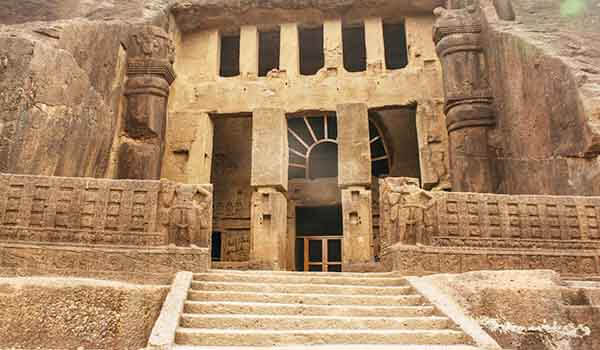

मुंबईतील बोरिवली येथील संजय गांधी राष्ट्रीय उद्यानाच्या जंगलात कान्हेरी लेण्या आहेत. कार्ला व अजिंठा लेण्यांसह कान्हेरी लेणी ही भारतातील पुरातन लेणी आहेत. ही लेणी कृष्णा लेणी म्हणूनही ओळखली जाते, या लेण्यांचा उपयोग भिक्षूंकडून पावसाळ्यात निवासस्थान म्हणून आणि प्रार्थनेसाठी केला जात असे. इ. स. पू. प्रथम शतक आणि इ.स. दहाव्या शतकाच्या दरम्यान बांधलेल्या या प्राचीन लेण्या आहेत, अजिंठा लेणी ही त्याच वेळी कोरल्या गेल्या आहेत. काळ्या बेसाल्ट दगड त्यांच्या बांधकामात वापरल्यामुळे या लेण्या जगभरातील पर्यटकांना आकर्षित करतात.
प्राचीन भारतीयांकडून जल व्यवस्थापन प्रणालीच्या ( रेन वॉटर हार्वेस्टिंग ) सुरुवातीच्या प्रयत्नांचा पुरावा कान्हेरी लेण्यांमध्येही आहे. लेण्यांच्या वरील टेकडीच्या माथ्यावर, पावसाचे पाणी साठवण्याच्या प्राचीन प्रणालीचे अवशेष सापडतात. कालव्यात व कुंडातून पावसाचे पाणी मोठ्या टाकींमध्ये साठवले जाते. ५१ शिलालेख आणि २६ शृंखला या कान्हेरी लेणीमध्ये आढळतात. शिलालेख ब्राह्मी, देवनागरी आणि पहलवी मध्ये आहेत. बुद्धांची अपूर्ण पेंटिंग गुहा क्रमांक ३४ मध्ये आढळूते.
समुद्रसपाटीपासून या लेण्या १५०० फूट उंचीवर आहेत. कान्हेरी हा शब्द कृष्णगिरी या संस्कृत शब्दापासून आला आहे. येथे उत्तम जल व्यवस्थापन प्रणालीसह बोधिसत्त्वाचा एक भव्य बुद्ध शिल्प आहे. लेण्यांपैकी एका लेणीमध्ये चमकदार रंगात रंगविलेली देखील आहे. निसर्गरम्य नैसर्गिक सौंदर्य, अद्भुत बौद्ध धर्माच्या कलेचा आणि येथील शांततेचा अनुभव नक्की घ्या.
स्थळ: बोरिवली (मुंबई), महाराष्ट्र.